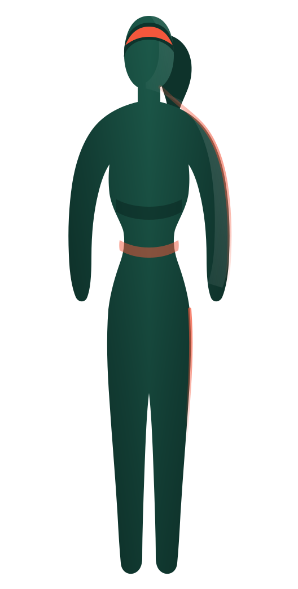
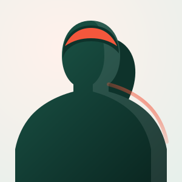

Foundation
- Format
- One to one
- Length
- Eight weeks
- Where
- South Austin studio
- For
- Starting, or starting again

Independent trainer · Austin, Texas
Eleven years on my own. One thousand three hundred and eighty people. A method patient enough to survive your actual week.

I left the gym floor in 2015 and never went back to it. Everything since has been mine: my clients, my hours, my method, my mistakes.
Most plans open with a number. A load, a rep count, a weight on a bar.
Mine opens with your breath, because it is the only part of you that tells the truth about effort.
Four weeks finding it. Four weeks building on it. Then, and only then, we add the number.
That is the whole thing. Not complicated. Just patient.
Pick by how much of your week you actually have. Not by how ambitious you feel today.
Not sure which? That is what the consult is for. It is twenty minutes and it is free.
Book a consultI came in able to do nothing overhead and spent eight weeks on what felt like breathing lessons. Then in week nine I pressed my own bodyweight and understood the whole thing at once.
Two babies and a back that had opinions. Sophia is the first coach who did not ask me to be who I was in 2016.
I travel three weeks out of four. She built the whole programme around hotel rooms and it still moved my deadlift ninety pounds.
Sixty-one years old and I train twice a week with people half my age. Nobody is more surprised than my cardiologist.
Also: a level two weightlifting certificate I took twice, a nutrition qualification I use less than I expected, and eleven years of not having a boss.
Your session, just now
South Austin studio · remote anywhere · replies within a day